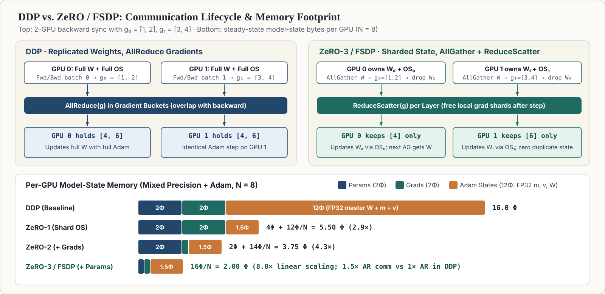

很多工程师学大模型分布式训练时，总觉得脑子里是一堆互不相连的零碎名词——DDP、ZeRO、FSDP、TP、PP、EP——看懂了一篇博客，换到代码仓库又对接不上。如果把视角抬高一层，会发现整个分布式训练大厦其实只由两个物理约束推出：GPU 的 HBM 显存上限（模型状态 + 激活等剩余状态），以及各级物理互联链路的延迟与带宽。
一旦你用“命名设备网格下标”把张量切分写进数学表达式，并用四种核心集合通信——AllGather、ReduceScatter、AllReduce 和 All-to-All——的通信开销来衡量每一次数据搬运，所有并行范式就自动拧成了一条逻辑闭环：Megatron-LM 的列切配行切、FSDP 前向拼权重反向切梯度、GPipe 切微批次、DeepSpeed-MoE 按目标专家搬 token，本质上都是“把张量切在哪一维”和“下一步计算缺少了什么”的代数必然。
这篇教程把 Google JAX Scaling Book（第三章）的网格分片演算，与「猛猿」《图解大模型训练》全系列八篇硬核文章（GPipe 流水线、数据并行上/下篇、Megatron-LM 张量并行与源码解读 2–3、DeepSpeed-Megatron MoE 原理与源码解读）全面萃取并串联起来，同时把典型易错计算题直接揉进对应推导环节。
第一部分：单卡为何训不动——显存构成与分布式混合精度
Model States (16Φ) 与 Residual States（激活、临时缓存与碎片）
DeepSpeed ZeRO 论文把训练期 GPU 显存严格拆成两大板块：只跟参数量 $\Phi$ 绑定的模型状态（Model States），以及随序列长度、批大小与内存分配节奏剧烈波动的剩余状态（Residual States）。
1. 模型状态（$16\Phi$ 或 $18\Phi$ 字节）。 现代大模型训练标配混合精度 + Adam 优化器：前向和反向计算吃 16-bit 浮点数（FP16 或 BF16）跑满 Tensor Core 算力，而优化器更新保留全 FP32 状态，避免极小更新量 $\Delta W = -\eta \cdot \hat{m}_t / (\sqrt{\hat{v}_t} + \epsilon)$ 在半精度舍入中归零：
| 显存组成 | 数值精度 | 每参数字节 | 7B 模型 | 70B 模型 | 175B 模型 |
|---|---|---|---|---|---|
| 前向 / 反向计算权重 | BF16 / FP16 | $2\Phi$ | 14 GB | 140 GB | 350 GB |
| 梯度（Gradients） | BF16 / FP16（或 FP32） | $2\Phi$（或 $4\Phi$） | 14 GB | 140 GB | 350 GB |
| FP32 主权重副本（Master Weights） | FP32 | $4\Phi$ | 28 GB | 280 GB | 700 GB |
| Adam 一阶动量（$m$） | FP32 | $4\Phi$ | 28 GB | 280 GB | 700 GB |
| Adam 二阶动量（$v$） | FP32 | $4\Phi$ | 28 GB | 280 GB | 700 GB |
| 静态模型状态总计 | 混合精度（FP16/BF16 + FP32 OS） | $16\Phi$（FP32 梯度则 $18\Phi$） | 112 GB | 1.12 TB | 2.80 TB |
算一笔粗账就能明白困境：连 7B 稠密模型的静态状态就要 $112\text{ GB}$（配 FP32 主梯度缓冲区则达 $126\text{ GB}$），单张 80 GB H100 还没算输入样本就已经溢出了。
2. 剩余状态（Residual States）。 猛猿在《数据并行下篇》中强调了除权重外同样致命的三类隐形杀手：
- 激活值（Activations）：前向算完必须暂存下来给反向求导用的中间输出。按 Megatron-LM / Korthikanti 等人的经典公式，在不做激活检查点（Activation Checkpointing）的情况下，单层标准 Transformer（序列长度 $s$、微批 $b$、隐藏维 $h$、注意力头数 $a$）需要暂存的激活显存为： $$\text{Mem}_{\text{act/layer}} = s b h \left(34 + \frac{5 a s}{h}\right) \text{ 字节}$$ 代入一个 70B 量级参数（$h = 8192, a = 64, L = 80$），哪怕仅喂一条长文本（$b = 1, s = 4096$），$\frac{5 a s}{h} = 160$，整网激活高达 $80 \times 4096 \times 8192 \times 194 \approx \mathbf{521\text{ GB}}$——是权重本身显存的 $3.7$ 倍以上。
- 临时缓冲区（Temporary Buffers）：AllReduce 梯度桶或层级参数转换时临时申请的大块扁平缓存。
- 内存碎片（Fragmentation）：PyTorch
CachingAllocator在长期驻留的激活检查点和短命临时张量反复交错分配时留下的空洞，明明总量没满却报 OOM。
Megatron 源码解读 3：分布式混合精度、main_grad 与全局梯度裁剪
单卡用 PyTorch AMP 的 GradScaler 很好写，可一旦切进跨 TP/PP/DP 的 Megatron-LM，必须由 Float16OptimizerWithFloat16Params 配合连续内存池来统一调度。猛猿《Megatron 源码解读 3》剖析了其中环环相扣的底层设计。
先看数值表示：IEEE FP16 是 1-5-10 位格式（正规数有效区间约 $6.1 \times 10^{-5} \text{–} 65504$），动态范围太窄极易梯度下溢或上溢；BF16 是 1-8-7 位格式，指数位和 FP32 一样多、范围完全覆盖普通训练无需 Loss Scale，但尾数只剩 7 位（约两位有效数字），当参数本身 $|W| \approx 1.0$ 而单步更新 $|\eta \nabla W| \approx 10^{-4}$ 时会直接吞掉更新——所以不管是 FP16 还是 BF16，优化器内部都必须维护 FP32 主权重（master_weights）。
一个标准训练 Step 在 Megatron 混合精度优化器源码里按以下 6 步严格推进：
- 动态损失缩放（Dynamic Loss Scaling，FP16 专用）：
DynamicLossScaler在反向前把 Loss 放大 $S = 2^k$ 倍（如初值 $2^{32}$），顺着链式法则把所有微弱梯度一同抬进 FP16 正常区间。 - 连续平坦的
main_grad显存池：为了避免几百个参数层散落分配碎梯度，Megatron 在初始化时按参数桶预开一块一整块连续的FP32（或BF16）大缓冲区，让每个param.main_grad作为指向对应切片的 View。反向传播算完一层就把梯度直接原地累加进该连续切片，实现“零碎片化”与“单次大包 NCCL 通信”。 - 分布式梯度同步与反缩放（Unscale）：梯度经过 DP 组
AllReduce（或分布式优化器下的ReduceScatter）后，统一除以 $S \cdot \text{world\_dp}$ 还原。 - 全局跨卡
found_inf共识检查：多卡模型并行时最怕“Rank 0 上溢跳步、Rank 1 没溢照常更新”，那会当场把同一个 Transformer 切碎成两个不匹配的半残模型！因此每张卡扫描各自梯度是否出现inf/NaN后，必须跨整个模型并行组（$\text{TP} \times \text{PP}$）做一次标量AllReduce(MAX)：只要集群里有任何一块卡溢出，全部卡一齐清零梯度、减半缩放因子 $S \leftarrow S / 2$、同步跳过本步 Adam 更新；连续hysteresis（如 1000）步无异常后再把 $S$ 翻倍。 - 分布式全局 L2 梯度裁剪（
clip_grad_norm）：由所有非重复参数的main_grad协同计算全局 L2 范数： $$\|g\|_2 = \sqrt{\sum_{r \in \text{TP}} \sum_{s \in \text{PP}} \|g_{r, s}\|_2^2}$$ 源码里会精细剔除跨 TP 卡完全复制的参数（如 LayerNorm 权重），防止被算重 $\text{TP}$ 倍，再经过组内标量AllReduce(SUM)开方并按 $\min\!\left(1, \frac{g_{\max}}{\|g\|_2 + \epsilon}\right)$ 统一缩放。 - FP32 更新并强转回写：用裁剪后的梯度更新 FP32
master_weights，然后把新权重拷贝强转回FP16/BF16计算副本。
第二部分：分片代数、四大集合通信与 Roofline 通信代价
命名网格记法与 32 卡易错分片题精算
当规模扩大到成百上千张卡，靠口头描述“按列分给这几张卡”极易算错。JAX Scaling Book 给物理设备网格（Device Mesh）起好命名轴——例如 32 张 GPU 组成二维网格 $\text{Mesh}(\{X: 8, Y: 4\})$——并把分片轴直接写成张量维度的下标：
- 完全复制（$A[I, J]$）：维度没有任何下标，每张卡各自持有完整一份 $A$。
- 单轴分片+跨轴复制（$A[I_X, J]$）：第 1 维 $I$ 沿物理轴 $X$ 切开，第 2 维 $J$ 不切；物理轴 $Y$ 根本没出现，说明分片沿 $X$ 切好之后，在 $Y$ 轴方向上是完整复制的。
- 二维正交分片（$A[I_X, J_Y]$）：单卡局部形状为 $\left(\frac{|I|}{|X|}, \frac{|J|}{|Y|}\right)$，总内存严格缩为 $1 / (|X| \cdot |Y|)$。
- 多轴合并一维分片（$A[I_{XY}, J]$）：把 $X$ 和 $Y$ 展平成一个长度为 $|X|\cdot|Y|$ 的大轴统一去切分 $I$。
- 禁止重用物理轴（$A[I_X, J_X]$）：同一硬件轴 $X$ 在同一个张量里只能出现一次；一旦用于切行，再用同一轴切列会导致只有对角分片存在、非对角信息彻底丢失。
- 未归约部分和（$C[I, K]\{U_X\}$）：沿 $X$ 轴的每张卡都各拿一份形状完整为 $[I, K]$ 的局部和，真正数学结果等于整组按位置相加 $\sum_{x=0}^{|X|-1} C^{(x)}[I, K]$。
import jax
import jax.numpy as jnp
mesh = jax.make_mesh(axis_sizes=(8, 4), axis_names=('X', 'Y'))
P = lambda *spec: jax.NamedSharding(mesh, jax.sharding.PartitionSpec(*spec))
# 逻辑形状 [2048, 8192] 的 BF16 矩阵：E 只沿 4 卡的 Y 轴切，F 不切（沿 X 轴复制 8 份）
A = jnp.zeros((2048, 8192), dtype=jnp.bfloat16, device=P('Y', None))
# A.shape == (2048, 8192)，但每张卡局部形状是 (512, 8192) -> 8 MiB经典易错题精算（$\text{Mesh}(X=8, Y=4)$ 共 32 张卡上的 $A[E_Y, F]$）：设 $E = 2048$、$F = 8192$ 且为 BF16（每元素 2 字节）。很多同学算成把 2048 分给全部 32 张卡得到 $\frac{2048}{32} = 64$ 行、$64 \times 8192 \times 2\text{ B} = 1\text{ MiB}$，为什么书里答案是 $512 \times 8192 \times 2\text{ B} = 8\text{ MiB}$？
秘诀正在下标 $E_Y$ 里：$E$ 只沿设备网格的 $Y$ 轴切，而 $Y$ 轴只有 $4$ 张卡，所以每张卡分到 $2048 / 4 = 512$ 行；由于 $X$ 轴没出现在任何下标上，32 张卡沿着 $X$ 分成 $8$ 个互为副本的 4 卡组，每组内部各自拼成完整矩阵：
| 副本组（$X$ 轴） | $Y = 0$ | $Y = 1$ | $Y = 2$ | $Y = 3$ |
|---|---|---|---|---|
| $X = 0$ | 第 $0\text{–}511$ 行 | 第 $512\text{–}1023$ 行 | 第 $1024\text{–}1535$ 行 | 第 $1536\text{–}2047$ 行 |
| $X = 1$ | 第 $0\text{–}511$ 行 | 第 $512\text{–}1023$ 行 | 第 $1024\text{–}1535$ 行 | 第 $1536\text{–}2047$ 行 |
| 其余 6 组（$X = 2 \dots 7$） | 同样 $0\text{–}511$ 行 | 同样 $512\text{–}1023$ 行 | 同样 $1024\text{–}1535$ 行 | 同样 $1536\text{–}2047$ 行 |
每张卡初始持有 $512 \times 8192 \times 2\text{ B} = 8,388,608\text{ B} = \mathbf{8\text{ MiB}}$。沿着各自 4 卡的 $Y$ 组做完 AllGather_Y，每卡得到完整 $[2048, 8192]$（$32\text{ MiB}$）。反过来用 $64$ 行一验就破绽百出：若每卡真只拿 $64$ 行，只在 4 卡组内做 AllGather_Y 最多只能拼出 $64 \times 4 = 256$ 行，根本凑不出 2048 行！要想分给全 32 张卡，记法必须写成 $A[E_{XY}, F]$。
四大集合通信原语与矩阵视角下 AllGather vs. All-to-All
集合通信（Collectives）的 All 指参与某条通信轴的全部设备（如同一个 $X$ 坐标下的 4 张 $Y$ 轴卡）。快速辨别四兄弟，只需盯紧两句话：数据要不要按位置求和？做完每卡拿到完整还是切片？
| 通信原语 | 记法签名 | 内部动作 | 训练常见环节 |
|---|---|---|---|
AllGather |
$[A_X, B] \to [A, B]$ | 收集各卡分片并按卡序拼成完整张量（消掉下标 $X$） | FSDP / ZeRO-3 计算前把该层分片权重拼回完整矩阵 |
ReduceScatter |
$[A, B]\{U_X\} \to [A_X, B]$ | 按位置求和，再按另一维分片还给各卡（消去 $\{U_X\}$，添上下标） | 梯度求和后各卡只保留归属自己的梯度切片来更新本地 OS |
AllReduce |
$[A_X, B]\{U_Y\} \to [A_X, B]$ | 按位置求和后让每卡拿到完整总和（$\equiv \text{ReduceScatter} + \text{AllGather}$） | DDP 同步梯度，或 Megatron 沿内维 $D$ 切分的矩阵乘汇总 |
All-to-All |
$[E_Y, F] \to [E, F_Y]$ | 每卡切成 $N$ 块，把第 $j$ 块发往第 $j$ 卡并拼接（转移下标位置） | MoE 将 token 送入对应专家卡，或把行切分转为列切分 |
把完全一样的数字喂给四个操作（两卡初始：$\text{GPU}_0 = [1, 2]$、$\text{GPU}_1 = [3, 4]$）：
| 操作 | GPU 0 最终结果 | GPU 1 最终结果 | 单卡尺寸与语义说明 |
|---|---|---|---|
| 初始输入 | $[1, 2]$ | $[3, 4]$ | 各持一半原始分片（$1\times$） |
AllGather |
$[1, 2, 3, 4]$ | $[1, 2, 3, 4]$ | 直接拼接不求和（体积膨胀为 $2\times$） |
ReduceScatter |
$[1 + 3] = [4]$ | $[2 + 4] = [6]$ | 先归约相加，再拆片分发（减半为 $0.5\times$） |
AllReduce |
$[4, 6]$ | $[4, 6]$ | 既累加又让每卡保留完整结果 |
All-to-All |
$[1, 3]$ | $[2, 4]$ | GPU 0 收各自第 0 块，GPU 1 收第 1 块（总大小不变 $1\times$） |
这里一并澄清两个核心疑问：第一，AllReduce = AllGather + Scatter 吗？不对！正确顺序是 ReduceScatter + AllGather。单纯的 Scatter 只拆不加，算不出上面 $1+3=[4]$ 和 $2+4=[6]$ 的求和；必须先用 ReduceScatter 累加并各自留下归约后的一片，再接 AllGather 拼回 $[4, 6]$。而只要下一步原本就按切片更新（FSDP / 序列并行），做到 ReduceScatter 停手立刻省下一半流量！
第二，AllGather_Y 和 AllToAll_Y 最后都在沿行拼，到底差在哪里？回到上面 4 卡 $Y$ 组的矩阵 $A[E_Y, F]$（起初每卡有互不重合的 512 行、完整的 8192 列，占用 $8\text{ MiB}$）：
| 操作 | 每张卡怎么发送 | 做完每卡形状 | BF16 占用变化 |
|---|---|---|---|
| $\text{AllGather}_Y: [E_Y, F] \to [E, F]$ | 把自己完整 512 行广播给组内其余 3 卡 | $[2048, 8192]$ | $32\text{ MiB}$（胀大 $4\times$） |
| $\text{AllToAll}_Y: [E_Y, F] \to [E, F_Y]$ | 把 8192 列切成 4 段，第 $j$ 段只发给第 $j$ 卡 | $[2048, 2048]$ | $8\text{ MiB}$（总量纹丝不动 $1\times$） |
看懂 GPU 0 的视角：AllToAll_Y 后它从 4 张卡各自收到「512 行 × 前 2048 列」并沿行拼成 $[2048, 2048]$，GPU 1 收第二段 2048 列——于是原本「每卡管一段行」被零冗余转置成了「每卡管一段列」。
一句话选型口诀：永远问下一步计算“缺什么”
- 手头只有分片、下一步需要完整张量 $\implies$
AllGather - 手头算出了完整形状的部分和 $\{U_X\}$、下一步需要完整总和 $\implies$
AllReduce - 手头算出了完整形状的部分和 $\{U_X\}$、下一步各卡只要属于自己的那 $1/N$ 片 $\implies$
ReduceScatter - 手里按 A 维切分、下一步要换成按 B 维切分（或按路由把 token 发给目标专家卡） $\implies$
All-to-All
![左栏展示两张 GPU 从 [1,2] 和 [3,4] 出发跑四种集合通信的精确输出，右栏展示 Mesh(X=8, Y=4) 中 4 卡 Y 轴组内 AllGather_Y 扩展成 32 MiB 与 AllToAll_Y 保持 8 MiB 的差异。](../fig-collectives.svg)
Ring 延迟-带宽 Roofline 与 Kronecker 反向对偶证明
选出原语之后，真实花掉多少毫秒？按照 JAX Scaling Book 的环形链路推演，记未分片完整张量总字节为 $V$、轴上卡数为 $|X|$、单轴双向链路带宽为 $W_{\text{ici}}$、单跳（Hop）启动固有延迟为 $T_{\min}$（通常约 $1\text{ }\mu\text{s}$）。
1. Ring AllGather 与 ReduceScatter 的延迟-带宽分段模型。 双向环上，每张卡把大小 $\frac{V}{|X|}$ 的切片同时向左、右发送（合计每跳 $\frac{2V}{|X|}$），共传 $\lfloor |X|/2 \rfloor \approx \frac{|X|}{2}$ 跳覆盖全环，总时间中的 $|X|$ 在带宽项上竟会彻底约消；如果同时沿着 $N_{\text{axes}}$ 个正交硬件轴做聚合，总带宽同步倍增：
这条公式解释了一个极具穿透力的系统规律：在带宽受限区（大张量），AllGather 和 ReduceScatter 耗时只取决于完整张量大小 $V$ 与单链路带宽 $W_{\text{ici}}$，跟组里有多少张卡 $|X|$ 无关！只有当切片小到不足 $W_{\text{ici}} \cdot T_{\min}$ 的微小张量（如推理采样 Token）时，才会撞进与卡数正比的跳数延迟区 $\frac{T_{\min}|X|}{2}$。而因为 $\text{AllReduce} = \text{ReduceScatter} + \text{AllGather}$，所以带宽区严格翻倍：$T_{\text{AR}} = \frac{2 V}{W_{\text{ici}}}$（对应单向 NCCL 环经典表达式 $2\frac{N-1}{N}\frac{V}{B_{\text{uni}}}$）。
2. 为什么 All-to-All 只要 AllGather 四分之一时间？ AllGather 需要把本卡整块切片 $\frac{V}{D}$ 传完所有 $D-1$ 跳（工作量正比于 $D^2$）；而 All-to-All 里本卡每个目标块只有 $\frac{V}{D^2}$ 且距离各不相同！以 4 卡单向环上 GPU 0 的 $[A, B, C, D]$ 为例：$A$ 留在原地，第 1 跳传 $B,C,D$、第 2 跳传 $C,D$、第 3 跳只传 $D$，三角级数求和 $\sum_{k=1}^{D-1} k = \frac{D(D-1)}{2}$ 直接比单向 AllGather 少一半；放到左右并发的双向环里，最远跳距缩半成 $D/2$，三角和再压成 $D^2/8$（相比 AllGather 的 $D^2/2$），正好省下 $4\times$ 带宽代价。推广到多维网格 $(A \times B \times \dots)$ 共 $N$ 张卡：
这 $4\times$ 的通信红利正是 MoE 敢在每一层前后各跑一趟 All-to-All 的底气。
3. 自动微分的伴随对偶证明（$\text{AllGather}^\top = \text{ReduceScatter}$）。 为什么 FSDP / ZeRO-3 与序列并行总在前向用 AllGather、反向对应 ReduceScatter？设向量维度为 $n$、卡数 $p$，全 1 列向量 $\mathbf{u} = (1, \dots, 1)^\top \in \mathbb{R}^p$，用 Kronecker 积 $\otimes$ 直接把广播和归约写成线性算子矩阵：
由链式法则，线性通信算子 $y = \mathcal{A}x$ 的反向梯度满足 $\frac{\partial \mathcal{L}}{\partial x} = \mathcal{A}^\top \frac{\partial \mathcal{L}}{\partial y}$。因此前向 AllGather 的精确梯度天然就是反向 ReduceScatter（反之亦然），FSDP 与 Megatron-SP 不过是把这套矩阵转置恒等式写成 CUDA 反向钩子而已。
分片矩阵乘法的四种典型情形与计算通信重叠
回到任何两个分布式矩阵相乘 $A[I, J] \cdot B[J, K] \to C[I, K]$（$J$ 是收缩内维，$I, K$ 是非收缩外维；内维收缩还可写成列向量与行向量的外积之和 $A \cdot B = \sum_{i=1}^P A_{:, i} \otimes B_{i, :}$）。JAX Scaling Book 证明所有分布方式严丝合缝落进 4 种基本情形：
- 情形 1 — 收缩维 $J$ 两侧都未切分： $$A[I_X, J] \cdot B[J, K_Y] \to C[I_X, K_Y]$$ 前向零通信！每卡手里都有完整的内维向量 $J$，本地算完就是对应位置切片。标准数据并行（$X[B_X, D] \cdot W[D, F]$）与 Megatron 列并行（$X[B, D] \cdot W[D, F_Y]$）都属于这一类。
-
情形 2 — 仅一侧切分了收缩维（$A[I, J_X] \cdot B[J, K]$）：
局部维度对不上，通常先做
AllGather_X把那一方拼完整再本地乘。JAX 书里专门用 Question 4 对BF16计算 $X[B, D] \cdot W[D_X, F] \to Z[B, F]$（算力 $C$、带宽 $W_{\text{ici}}$）的两种方案比过一遍真实 Roofline 临界点：- 方案 1（先
AllGather_X(W)再全量乘，即 FSDP 路线）：耗时 $T_1 = \max\!\left(\frac{2 B D F}{C},\; \frac{2 D F}{W_{\text{ici}}}\right)$。通信能否被计算藏住取决于微批大小是否跨越算术强度阈值 $B \gt \frac{C}{W_{\text{ici}}}$（H100 / TPU 上约 2550 tokens）。 - 方案 2（本地切分乘 +
AllReduce_X，省 $X\times$ 算力）：耗时 $T_2 = \max\!\left(\frac{2 B D F}{X \cdot C},\; \frac{4 B F}{W_{\text{ici}}}\right)$。当 $D \gt 2B$（通信量更小）或大 batch 下 $D \gt \frac{2C}{W_{\text{ici}}}$ 时方案 2 反而更快；但 FSDP 依然选用方案 1，因为真实训练时激活 $X[B_X, D]$ 也切在 $X$ 轴上，根本不允许把 $W$ 独占切在同一轴做方案 2！
- 方案 1（先
-
情形 3 — 两侧都在同一硬件轴 $X$ 上切分了收缩维 $J$：
$$A[I, J_X] \cdot_{\text{LOCAL}} B[J_X, K] \to C[I, K]\{U_X\}$$
内维对齐可以本地相乘，但产出的是未归约部分和 $\{U_X\}$。后续接
AllReduce_X还原 $C[I, K]$（即 Megatron 行并行），或者直接接 $\text{ReduceScatter}_{X, K} \to C[I, K_X]$ 保留分片状态供下一层序列并行或 FSDP 优化器使用。 -
情形 4 — 两侧的自由外维被切在了同一硬件轴 $X$ 上（$A[I_X, J] \cdot B[J, K_X]$）：
禁止写法——第 $i$ 号设备只拿得到 $(I_i, K_i)$ 对角块，所有交叉块完全算不出来，必须提前对 $A$ 或 $B$（选占内存更小的一侧）执行一次
AllGather_X解开冲突。
Collective Matmul 计算通信重叠：无论是情形 2 前置 AllGather 还是情形 3 后置 ReduceScatter，工业界都不会傻等整张权重传完才算——而是把环上通信与分块乘加交织成流水线（算第 $k-1$ 块分片的同时，底层环路已经在传第 $k$ 块），彻底榨干 Tensor Core 利用率。
第三部分：数据并行——从 DP、DDP 源码引擎到 ZeRO / FSDP
DP 瓶颈与 DDP Reducer、反向 Hook 及分桶异步机制
纯数据并行本质是前向套用情形 1（$X[B_{\text{DP}}, D] \cdot W[D, F]$），反向计算权重梯度时因收缩在被切分的 Batch 维上（$dW = X[B_{\text{DP}}, D]^\top \cdot dY[B_{\text{DP}}, F]$），触发了情形 3 产生部分和 $\{U_{\text{DP}}\}$。
对照猛猿《数据并行上篇》的源码剖解，PyTorch 从 DP 到 DDP 走完了决定工程可用性的关键一步：
- 单进程
DataParallel（DP）四步瓶颈：跑在一个 Python 进程的多线程里，受制于 GIL 锁，每次迭代都得由主卡GPU 0完成 (1) 把权重广播给其他卡、(2) 拆批样本分发、(3) 汇总全部卡的预测结果回GPU 0算 Loss（主卡 HBM 暴涨）、(4) 把全部卡梯度聚回GPU 0更新参数。主卡通信与显存单点坍塌。 - 多进程
DistributedDataParallel（DDP）Reducer引擎：改成“一卡一进程”，在底层 C++Reducer中提前按反向计算拓扑顺序（从最后一层往输入层排）把参数分组装进连续的梯度桶（Gradient Buckets，默认 ~25 MB），同时给每个参数挂载 PyTorchautogradHook。反向算完末尾几层梯度填满一个桶的瞬间，无需等待前层算完，Reducer直接异步拉起该桶的 NCCL RingAllReduce，把通信延迟完全藏在前面几十层的反向求导计算下面！
设参数字节总量为 $\Psi$，DDP 单向 Ring AllReduce 每卡每步总收发数据为 $\text{Vol}_{\text{DDP}} = 2 \frac{N-1}{N} \Psi \approx \mathbf{2\Psi}$，几乎不受卡数 $N$ 增长影响。
ZeRO-1 / 2 / 3、PyTorch FSDP 与 ZeRO-R 剩余显存优化
DDP 把算力拓展上去了，显存却还是 $N$ 倍复制的死结——所有 $N$ 张卡都死存同一份 $16\Phi$ 静态状态、做一模一样的 Adam 更新。DeepSpeed ZeRO（猛猿《数据并行下篇》）与 PyTorch FSDP 沿数据并行轴彻底剖开模型状态，外加 ZeRO-R 治理激活等剩余显存。
继续用两张卡梯度的经典数字例题（$\text{GPU}_0$ 算出 $g_0 = [1, 2]$、$\text{GPU}_1$ 算出 $g_1 = [3, 4]$，真实总和 $[4, 6]$）对照内部动作：
- 普通 DDP：两卡常驻整份权重 $W$ 和全套 Adam 状态；反向算出 $g_0, g_1$ 后跑
AllReduce，双方都拿着 $[4, 6]$ 做重复的整网更新。 - ZeRO-3 / FSDP：$\text{GPU}_0$ 只常驻 $W_0$ 与 $\text{OS}_0$，$\text{GPU}_1$ 只存 $W_1$ 与 $\text{OS}_1$。跑到每一层计算之前（前向和反向皆然），双卡调用
AllGather(W)（JAX 情形 2 方案 1）拼出该层完整权重、算出梯度后立刻释放他人切片；紧接着梯度调用ReduceScatter(g)（精确对应第二部分的 Kronecker 转置 $\text{AllGather}^\top = \text{ReduceScatter}$！）——于是 $\text{GPU}_0$ 只领走 $[4]$ 更新 $W_0$，$\text{GPU}_1$ 只领走 $[6]$ 更新 $W_1$，冗余彻底归零。
| 策略阶段 | 被切分的状态 | 单卡静态 HBM ($16\Phi$) | $N = 8$ 时单卡占比 | 每步总通信量（对比 DDP $2\Psi$） |
|---|---|---|---|---|
| DDP（基线） | 无 | $16\Phi$ | $16.0\Phi$（$1.0\times$） | $2\Psi$（一次梯度 AllReduce） |
| ZeRO-1（$P_{os}$） | 优化器状态 OS | $4\Phi + \frac{12\Phi}{N}$ | $5.50\Phi$（省 $2.9\times$） | $2\Psi$（梯度 RS + 参数 AG） |
| ZeRO-2（$P_{os+g}$） | OS + 梯度 G | $2\Phi + \frac{14\Phi}{N}$ | $3.75\Phi$（省 $4.3\times$） | $2\Psi$（按层梯度 RS + 参数 AG） |
| ZeRO-3 / FSDP（$P_{os+g+p}$） | OS + G + 参数 P | $\frac{16\Phi}{N}$ | $2.00\Phi$（省 $8.0\times$） | $3\Psi$（$1.5\times$：前向/反向 AG + RS） |
留意为什么 ZeRO-1 和 ZeRO-2 的总通信量同样只是 $2\Psi$：一次 AllReduce 本就拆成 $\text{ReduceScatter}(1\Psi) + \text{AllGather}(1\Psi)$，ZeRO-1/2 只不过把本来用来广播完整梯度的后半段 $1\Psi$ AllGather，延迟到每卡先更新完各自那份 $1/N$ 参数后，再改发最新权重！只有 ZeRO-3 需要在反向再临时取回权重而多出一趟 $1\Psi$ 的 AllGather（PyTorch FSDP 通过在算第 $l$ 层的同时提前 Pre-fetch 异步拉取第 $l+1$ 层权重来完全掩盖这额外一半通信）。
ZeRO-R（剩余状态三件套优化）：把静态权重砍成 $1/N$ 后，残余显存会迅速成为主要矛盾。ZeRO-R 给出了三大补充手段：(1) $P_a$（分区激活检查点）将重计算检查点里的激活值切分到模型并行卡上，按 TP 维度等比压缩激活显存（Sequence Parallelism 的先驱）；(2) $C_B$（固定上限临时缓冲区）限制通信缓存上限不随层宽膨胀而突发 OOM；(3) $M_D$（动态显存碎片整理）在运行期主动整并长生命周期的激活检查点与短命临时张量，挽回 CachingAllocator 留下的碎裂空间。


第四部分：张量并行——Megatron-LM 架构与源码细节
MLP、多头注意力与数值稳定的 VocabParallelCrossEntropy
ZeRO-3 压缩不了单层前向瞬间的激活显存，纯 DP 也无法突破全局 Batch 上限。张量并行（TP）直接劈开每一层里面的参数矩阵。猛猿《张量模型并行，Megatron-LM》展示了 Megatron 最巧的代数匹配：把 Column-Parallel（情形 1）和 Row-Parallel（情形 3）首尾成对串联，从而让非线性激活与注意力头算子在中间完全不需要通信！
1. MLP 双层配对：输入 $X \in \mathbb{R}^{B \times S \times D}$，把第一层矩阵按列切为 $A = [A_0, A_1]$，第二层矩阵按行切为 $B = \begin{bmatrix} B_0 \\ B_1 \end{bmatrix}$：
$$Y_i = \text{GeLU}(X \cdot A_i) \quad \text{（零同步）}, \qquad Z = \text{AllReduce}\!\left(\sum_{i} Y_i \cdot B_i\right)$$由于 GeLU 是逐元素计算，分卡各自求激活在数学上和拼回去算完全等价；到第二层乘完后触发 JAX 情形 3 的部分和 $\{U_Y\}$，靠一次前向 AllReduce 合拢。
2. 多头自注意力（ParallelAttention）：天然沿着 Head 数量把 $W^Q, W^K, W^V$ 做列并行切分（每卡独占 $h/\text{TP}$ 个头），局部独立算完 $\text{Softmax}\!\left(\frac{Q_i K_i^\top}{\sqrt{d_k}}\right)V_i$ 后送入按行切分的投影矩阵 $W^O = \begin{bmatrix} W^O_0 \\ W^O_1 \end{bmatrix}$，只需一次前向 AllReduce 合拢。
3. 大词表输入输出并行（VocabParallelEmbedding 与 VocabParallelCrossEntropy）：面对动辄十万级词表 $V$，如果把巨大 logits 矩阵 $[B, S, V]$ 拉回同一张卡算交叉熵，仅 logits 就会直接爆显存。Megatron 对两端双管齐下：
VocabParallelEmbedding按词表范围把 $E[V, D]$ 切成 $E[V_{\text{TP}}, D]$，每张卡把不属于本卡区间的 token id Mask 置零、查表并做一次AllReduce拼出完整词向量。VocabParallelCrossEntropy借助 Log-Sum-Exp 数值稳定变形，在各卡持有部分词表 logits $Z_i \in \mathbb{R}^{B \times S \times (V/\text{TP})}$ 上完全不做词表级AllGather，仅同步 3 个极轻量的 $O(B \cdot S)$ 标量完成精确交叉熵： $$\begin{aligned} m_{\text{global}} &= \text{AllReduce}_{\max}\!\left(\max_{j \in V_i} z_{i, j}\right), \qquad z'_{i,j} = z_{i, j} - m_{\text{global}} \\ S_{\text{global}} &= \text{AllReduce}_{\text{sum}}\!\left(\sum_{j \in V_i} e^{z'_{i, j}}\right), \qquad z'_{\text{target}} = \text{AllReduce}_{\text{sum}}\!\left(\mathbb{I}[y \in V_i]\, z'_{i, y}\right) \\ \mathcal{L} &= \log S_{\text{global}} - z'_{\text{target}} \end{aligned}$$ 省下了高达数百倍词表通信体积的开销。
整层汇总下来，标准 Megatron-LM 每个 Transformer 层只在前向做 2 次 AllReduce、反向做 2 次 AllReduce；叠加序列并行（Megatron-SP）后，只需把残差处进出的 AllReduce 拆回 ReduceScatter 与 AllGather，总通信字节一分不多，LayerNorm 和 Dropout 处的巨大残差激活显存也能跟着按 $\text{TP}$ 倍一起切小。

源码拆解：3D 通信域编号、共轭 f/g 算子与 CudaRNGStatesTracker
猛猿《Megatron 源码解读 2》抓出了 mpu 模块里支撑 3D 并行跑稳的三个底层关键：
1. initialize_model_parallel 的集群编号策略。 设共 16 张卡、配置 $\text{TP} = 2, \text{PP} = 2, \text{DP} = 4$，源码遵循“最紧互联给 TP，镜像 Stage 给 DP，层间连线给 PP”原则生成三套正交进程组：
- TP 组（8 个 2 卡组）：
[0,1], [2,3], ..., [14,15]，相邻编号保证落在同一台机器的 NVLink 内。 - PP 组（8 条 2 阶段流水线）：
[0,8], [1,9], ..., [7,15]，跨越节点衔接 Stage 0 与 Stage 1。 - DP 组（4 个 4 卡组）：
[0,2,4,6], [1,3,5,7]（Stage 0 各自切片副本）和[8,10,12,14], [9,11,13,15]（Stage 1 副本）。
2. 共轭自动微分桥接算子 f 与 g：
class _CopyToModelParallelRegion(torch.autograd.Function):
"""算子 f：前向原样放行 (Identity)，反向对梯度的各分片偏导跑 AllReduce"""
@staticmethod
def forward(ctx, input_):
return input_
@staticmethod
def backward(ctx, grad_output):
return _reduce(grad_output)
class _ReduceFromModelParallelRegion(torch.autograd.Function):
"""算子 g：前向汇总 Partial Sum (AllReduce)，反向透传统一梯度"""
@staticmethod
def forward(ctx, input_):
return _reduce(input_)
@staticmethod
def backward(ctx, grad_output):
return grad_output为什么 f 前向放行而反向偏要做 AllReduce？前向时相同的 $X$ 复制给了所有列切卡去乘 $A_i$；但反向求导回 $X$ 时，由于 $X$ 同时贡献了各卡上的 $Y_i$，根据链式法则完整梯度是全组求和 $\frac{\partial \mathcal{L}}{\partial X} = \sum_i \frac{\partial \mathcal{L}}{\partial Y_i} A_i^\top$，这步聚合必须落在 f.backward 上。
3. 分布式随机数管理（CudaRNGStatesTracker）：如果不同卡上的 Dropout 乱用种子，一次前向立刻崩坏——但又不能一刀切用同一颗种子：
- 模型并行区内（已被切分的权重与隐状态）：每张 TP 卡拿的是不同神经元的切片，必须通过
model-parallel-rng给不同 TP Rank 分配互异但固定的随机流，确保不同切片上的 Dropout 掩码彼此统计独立。 - 模型并行区外（残差流里的 Dropout）：进入下一个 Block 前各卡拥有一模一样的完整张量 $Z$，所有 TP Rank 必须共用同一颗基础种子产生完全同步的掩码，否则下一轮前向各卡就彻底不同步了！
正因为 TP 的每层 4 次同步 AllReduce 死卡在激活计算的关键路径上，完全无法像 DDP 那样靠异步桶藏进反向里，跨节点走网卡延迟会立刻拖垮整机——因此工程最佳实践始终将 $\text{TP} \le 8$ 锁在机内 NVSwitch 内。
第五部分：流水线并行——GPipe 微批次、重计算与 1F1B
气泡率公式推导、Re-materialization 显存公式与 1F1B 演进
如果模型超过百亿/千亿、单机 8 卡再也塞不进权重与激活，把 TP 拉跨机器代价太惨重；此时需要沿着模型深度垂直剖分成 $P$ 个阶段（Stage）的流水线并行（PP），只靠相邻阶段之间轻量 P2P send/recv 传递层间边界张量。
若直接塞进一整个 Batch 按 $0 \to 1 \to 2 \to 3 \to 3 \to 2 \to 1 \to 0$ 顺序走完，任意瞬间只有 1 张卡在工作，空闲气泡高达 $r_{\text{naive}} = \frac{P-1}{P} = \mathbf{75\%}$（$P=4$）。对照猛猿《流水线并行，以 GPipe 为例》，GPipe 用三大设计把它变成了可用的工业基石：
- Micro-batch 微批次气泡推演：把全局 Mini-batch $N$ 拆成 $M$ 份微批次 $F_0 \dots F_{M-1}$ 连续喂入 Stage 0。设每个阶段前向与反向均耗 1 个单位时段，那么 1 轮前向波或反向波总共跨越 $M + P - 1$ 个时段，每张卡忙 $M$ 格、等填充满与排空各 $(P-1)$ 格，合计： $$r_{\text{GPipe}} = \frac{P - 1}{M + P - 1}$$ 于是 $P=4, M=4$ 时气泡降为 $3/7 \approx 42.9\%$；而取 $M \ge 4P$（例如 $M=16$）时，气泡可压到 $3/19 \approx \mathbf{15.8\%}$ 以内。
- 同步梯度累积与 BatchNorm 细节：全部微批次的梯度 $B_{M-1} \dots B_0$ 先在各 Stage 内部就地累积，等到末尾统一执行一步优化器更新，收敛性与单卡严格一致（若含 BatchNorm，统计量按微批次内计算而不跨微批次同步）。
- 重计算（Re-materialization / Activation Checkpointing）：要命的问题在于，GPipe 在前向 $F_0 \dots F_{M-1}$ 期间如果把全部中间层激活都留在显存里，峰值显存高达 $\mathcal{O}(N \cdot L)$！于是 GPipe 前向只保存每个微批次进入 Stage 边界的那几张输入激活，丢掉 Stage 内部所有激活，等反向算回来再现场重跑一次 Stage 内前向。用约 33% 的额外前向 FLOPs，把峰值激活内存压缩到： $$\text{Mem}_{\text{GPipe-recompute}} = \mathcal{O}\!\left(N + \frac{L}{P} \cdot \frac{N}{M}\right)$$
从 GPipe 演进到 1F1B 与 Interleaved 1F1B：即使开启重计算，GPipe 依然要先把所有 $M$ 个微批次的边界输入攒到显存里才开始反向，内存峰值仍跟微批数 $\mathcal{O}(M)$ 绑死。更晚近的 1F1B（PipeDream-Flush）在流水线打满之后严格按“算 1 步前向、立刻算 1 步反向、随手释放激活”交替推进——气泡率同为 $\frac{P-1}{M+P-1}$，但显存里同时滞留的微批次上限彻底降为阶段数 $\mathcal{O}(P)$，不再怕把 $M$ 调大！Megatron 的 Interleaved 1F1B 更进一步把同一阶段的连续层再拆成 $v$ 份跨卡交错排列，以 $v\times$ 极小的 P2P 通信交换，把气泡直接压缩至 $\frac{P-1}{vM + P - 1}$。实战中仍需注意 Embedding / 词表输出头容易造成首尾 Stage 负载略重，往往需要适当减配首尾分配的 Transformer 层数来对齐步调。

第六部分：专家并行——DeepSpeed-Megatron MoE（原理与源码）
稀疏门控路由、GShard Capacity Factor 与负载均衡辅助损失
稠密模型一涨参数量，单 token 计算 FLOPs 就同步线性暴涨；MoE（Mixture-of-Experts）把原本单块的 FFN 替换成 $E$ 个专家子网，同时让每个 token 每次前向仅动态激活评分最高的 Top-$k$ 个专家（例如 Switch Transformer 的 $k=1$ 或 GShard 的 $k=2$）。根据猛猿《DeepSpeed-Megatron MoE 原理篇》，把这种动态条件计算压进固定形状的高效 GPU 内核，依赖两大核心制度：
- 概率化 Top-$k$ 路由与专家容量上限（
Expert Capacity）：门控投影 $W_g \in \mathbb{R}^{M \times E}$ 计算概率分布 $P = \text{Softmax}(x \cdot W_g)$ 并筛选前 $k$ 专家（GShard Top-2 还会按 $2p_2$ 的概率随机决定是否把明显劣势的第二专家也派出去）。为了让 GPU 内核维持规整批形状与静态显存上限，每个专家固定只预留： $$C = \left\lceil \frac{N_{\text{tokens}} \cdot k}{E} \cdot \text{capacity\_factor} \right\rceil$$ 个坑位（通常容量因子取 $1.0 \text{–} 1.5$）。热门专家溢出 $C$ 的 token 被强制丢弃（Drop Token，借残差连接直通下一层）；冷门专家空缺的槽位则补零（Padding）。 - 负载均衡辅助损失（Auxiliary Load-Balancing Loss）：如果只看主流语言交叉熵，门控很快坍塌成只派发 1–2 个热门专家引发大面积拖尾与丢包。GShard / Switch 叠加可微辅助损失： $$\mathcal{L}_{\text{aux}} = \alpha \cdot E \sum_{i=1}^{E} f_i \cdot P_i$$ 其中 $f_i$ 是该批实际分入第 $i$ 个专家的 token 占比，$P_i = \frac{1}{N_{\text{tokens}}} \sum_t p_{t,i}$ 为预测分配概率均值。利用 $\sum_i f_i = \sum_i P_i = 1$ 与柯西不等式可见：严格当且仅当完全均衡 $f_i = P_i = \frac{1}{E}$ 时 $\mathcal{L}_{\text{aux}}$ 取全局极小值 $\alpha$（乘系数 $E$ 正是为了消除专家数差异带来的损失幅值缩放）。
两趟 All-to-All、MOELayer einsum 形状流与 DP = EP × EDP 分组
对照 ZeRO-3 的“token 留在原地、AllGather 搬参数”，专家并行（EP）反其道而行之：让千亿级专家权重钉死在各自 GPU 上，靠两次 All-to-All 把 token 送过去计算完再寄回来——而且别忘了第二部分证明过双向环上 All-to-All 只要 AllGather 的 $1/4$ 通信时间！
拿 2 卡微例重走一遍：设专家 0 在 GPU 0、专家 1 在 GPU 1；Attention 算完后 GPU 0 拿着 token $[a, b]$，GPU 1 拿着 $[c, d]$，门控决定 $a, c \to E_0$、$b, d \to E_1$：
- 第 1 趟
All-to-All（Dispatch 分发）：$a$ 留在本卡、$b$ 跨卡发给 GPU 1；$c$ 跨卡发给 GPU 0、$d$ 留在本卡。两卡各自就地算完 $E_0([a, c])$ 与 $E_1([b, d])$。 - 第 2 趟
All-to-All（Combine 归位）：算出的结果再按原地址寄回，GPU 0 重新拿到 $[a', b']$、GPU 1 拿到 $[c', d']$，按门控权重合并进残差，无缝衔接到下一个 Attention 块。
猛猿《DeepSpeed-Megatron MoE 源码解读篇》揭示了 MOELayer + TopKGate 内部是如何通过 torch.einsum 与自伴随 _AllToAll 精准对上张量维度的：
class _AllToAll(torch.autograd.Function):
@staticmethod
def forward(ctx, group, input):
ctx.group = group
output = torch.empty_like(input)
dist.all_to_all_single(output, input, group=group)
return output
@staticmethod
def backward(ctx, *grad_output):
# All-to-All 的转置仍然是 All-to-All：反向把梯度沿同一通信组原路退回
return (None, _AllToAll.apply(ctx.group, *grad_output))
# MOELayer.forward 关键张量流（hidden_states [S, M]）：
# 1. Dispatch 打包：按 (token, expert, slot) 掩码重排 -> [E, C, M]
dispatched = torch.einsum("sec,sm->ecm", dispatch_mask, reshaped_input)
# 2. 拆出 [EP, E_local, C, M] 后触发第 1 次 _AllToAll：跨卡交换 EP 与 token 维
dispatched = _AllToAll.apply(ep_group, dispatched)
# 3. 各卡就地执行各自 E_local 个专家 FFN：输出 [E_local, EP * C, M]
expert_out = experts(dispatched)
# 4. 第 2 次 _AllToAll 把结果送回原卡，随后按 combine_weights 加权恢复 [S, M]
combined = _AllToAll.apply(ep_group, expert_out)
output = torch.einsum("sec,ecm->sm", combine_weights, combined)极核心架构细节 — 为什么必须把 $\text{DP}$ 拆成 $\text{EP} \times \text{EDP}$？在多卡融合系统里，Attention、Embedding、LayerNorm、Router 在每张卡上都是同一套共享参数；唯独专家权重被分散了。若一共 $8$ 张卡、总共 $4$ 个专家且设 $\text{EP} = 4$，整群里每 $4$ 张卡凑齐 $E_0 \dots E_3$ 构成一组，一共放了 $2$ 份专家副本——于是 $\text{DP}(8) = \text{EP}(4) \times \text{EDP}(2)$：
EP 组（规模 4：{0,1,2,3}和{4,5,6,7}）：组内凑齐互异的 4 个专家，专司两次All-to-All搬运 token。EDP 组（Expert Data Parallel 规模 $\text{DP}/\text{EP} = 2$：{0,4}, {1,5}, {2,6}, {3,7}）：专司在相同专家的副本之间跑梯度AllReduce——GPU 0的 $E_0$ 绝不可与GPU 1的 $E_1$ 平均梯度！- 全局
DP 组（规模 8：{0..7}）：其余一切非专家共享参数继续享受 8 卡全量DP同步梯度。
在 deepspeed.moe.utils 源码里，split_params_into_different_moe_groups_for_optimizer() 负责扫描参数，把带 MoE 标志的权重剔出默认全局 DP 同步列表并单独挂进各自对应的 EDP 参数组中，最后还可以往每个专家 FFN 内部继续叠一层机内 TP，让全集群严格满足 $\text{world\_size} = \text{PP} \times \text{DP} \times \text{TP}$ 且 $\text{DP} = \text{EP} \times \text{EDP}$。

第七部分：全局拼图——4D 混合并行工程选型与 64 卡实战演算
把七个并行方案全摆进同一张物理特征总表里，每个维度的职责与部署铁律立刻清晰无误：
| 策略 | 被切分轴 | 前向通信 | 反向通信 | 每步通信总量 | 主要省哪块显存 | 适用物理链路 |
|---|---|---|---|---|---|---|
DDP |
样本维 $B_{\text{DP}}$ | 无 | 异步分桶 AllReduce |
$2\Psi$ | 批激活 $/ \text{DP}$ | 最外层 IB / RoCE |
ZeRO-1 / 2 |
$B_{\text{DP}}$ + OS (+ 梯度) | 无 | RS 梯度 + AG 参数 |
$2\Psi$ | $4\Phi + \frac{12\Phi}{\text{DP}}$（或 $2\Phi + \frac{14\Phi}{\text{DP}}$） | 最外层 IB / RoCE |
ZeRO-3 / FSDP |
$B_{\text{DP}}$ + OS + G + P | AllGather(W)（预取） |
AG(W) + RS(g) |
$3\Psi$（$1.5\times$） | $\frac{16\Phi}{\text{DP}}$（8 卡省 $8\times$） | 高速 NVLink / IB |
TP (Megatron) |
层内列 / 行 / 头 ($F_{\text{TP}}$) | 每层 2 次阻塞 AR |
每层 2 次阻塞 AR |
$4 \cdot 2B S D \cdot L$ | 权重 + MLP/Attn 激活 $/ \text{TP}$ | 机内 NVLink ($\le 8$) |
TP + SP |
+$S_{\text{TP}}$（LN/Dropout） | AG + RS |
RS + AG |
同 TP（字节不变） | 全部层激活均 $/ \text{TP}$ | 机内 NVLink ($\le 8$) |
PP (1F1B) |
网络层纵切（$P$ 阶段） | 极轻量 P2P send/recv |
极轻量 P2P send/recv |
极低（$2 B_\mu S D$ / 阶段） | 权重/OS $/ P$，激活 $\mathcal{O}(P)$ | 跨机节点（极耐高延迟） |
EP (MoE) |
离散专家（$E_{\text{EP}}$） | 每 MoE 层 2 次 A2A |
每 MoE 层 2 次 A2A |
仅 AG 环通信的 $1/4$ |
海量专家权重与 OS $/ \text{EP}$ | NVLink 或满对分带宽 IB |
实战配比演练 — 64 张 H100-80GB 集群（8 台 8 卡服务器）：牢记唯一原则——永远从最快硬件链路开始由内向外分配维度：
- 70B 稠密模型（总静态状态 $16\Phi \approx 1.12\text{ TB}$）：先把 $\text{TP} = 8$ 配序列并行（SP）锁死在单机内部 NVLink 上，让关键路径的每层 4 次同步绝不出网卡——单卡权重切为 $140 / 8 = 17.5\text{ GB}$，激活省 $8\times$；但组内静态状态仍有 $1120 / 8 = 140\text{ GB}$ 放不进 80GB H100，于是在机间加 $\text{PP} = 2$ 跨两台机器纵切（配 $M \ge 4P = 8$ 微批次与 1F1B 调度，气泡率压进 $11\%$ 左右），把静态占用再劈半至 $70\text{ GB}$。余下 $\text{DP} = 64 / (8 \times 2) = 4$ 路数据并行叠一个零额外通信的
ZeRO-1（分布式优化器）：此时单卡静态模型状态精算为 $\frac{2\Phi + 2\Phi}{16} + \frac{12\Phi}{64} = 17.5\text{ GB} + 13.1\text{ GB} = \mathbf{30.6\text{ GB}}$，单卡稳稳空出接近 $50\text{ GB}$ HBM 给长文本激活值与 KV 缓存，同时通讯流量分毫未涨！ - 同规模 64 卡跑稀疏 MoE（如 8 专家或 64 专家架构）：先固定机内 $\text{TP} = 4$ 与跨机 $\text{PP} = 2$，腾出 $\text{DP} = 64 / (4 \times 2) = 8$ 路空间，然后将其精确拆成 $\text{EP} = 4, \text{EDP} = 2$：每个 EP 域跨 4 张卡切开专家权重并跑两趟高效率
All-to-All，EDP = 2负责对齐同编号专家的副本梯度，而所有共享的 Attention 与 Router 依然在全局 8 路 $\text{DP}$ 上叠加ZeRO-1更新。
Citation
If you reference these derivations, roofline proofs, or sharding diagrams, please cite:
Chaoran Feng (2026). "Distributed LLM Training from First Principles: Collectives, Sharding, and Parallelism". Chaoran Feng's Blog. https://www.falcary.com/blogs/distributed-training/
@article{feng2026distributed,
title = {Distributed LLM Training from First Principles: Collectives, Sharding, and Parallelism},
author = {Feng, Chaoran},
year = {2026},
month = {November},
url = {https://www.falcary.com/blogs/distributed-training/}
}References
- How to Scale Your Model, Part 3: Sharded Matrices and How to Multiply Them. Austin, Bradbury, Blake, Chou, Douglas, Frostig, Levskaya, Pope, et al., Google DeepMind, 2025.
- Megatron-LM: Training Multi-Billion Parameter Language Models Using Model Parallelism. Shoeybi et al., NVIDIA, 2019 (arXiv:1909.08053).
- Reducing Activation Recomputation in Large Transformer Models (Sequence Parallelism & Activation Formula). Korthikanti et al., NVIDIA, 2022 (arXiv:2205.05198).
- ZeRO: Memory Optimizations Toward Training Trillion Parameter Models. Rajbhandari et al., Microsoft DeepSpeed, SC 2020 (arXiv:1910.02054).
- GPipe: Efficient Training of Giant Neural Networks using Pipeline Parallelism. Huang et al., Google Brain, NeurIPS 2019 (arXiv:1811.06965).
- GShard: Scaling Giant Models with Conditional Computation and Automatic Sharding. Lepikhin et al., Google Brain, ICLR 2021 (arXiv:2006.16668).
- DeepSpeed-MoE: Advancing Mixture-of-Experts Inference and Training to Power Next-Generation AI Scale. Rajbhandari et al., ICML 2022 (arXiv:2201.05596).
- 猛猿，《图解大模型训练》系列全八篇：流水线并行（Pipeline Parallelism），以 GPipe 为例、数据并行上篇（DP、DDP 与 ZeRO）、数据并行下篇（ZeRO 零冗余优化）、张量模型并行 Megatron-LM、Megatron 源码解读 2：模型并行、Megatron 源码解读 3：分布式混合精度训练、DeepSpeed-Megatron MoE 并行训练（原理篇） 与 （源码解读篇），知乎专栏「前面de算法」。